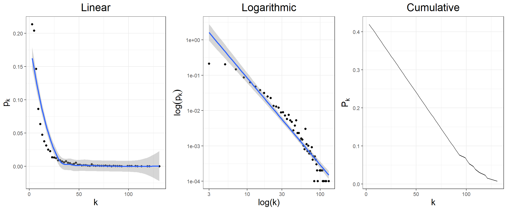

As we have seen, even though both models, ER and WS can explain some properties of real networks, none of them can actually describe the degree distribution, and so we can say that we need something else.
Let’s take a look at the degree distribution of the hep-th collaborations:

from the graphs, we can immediately identify the type of relationship that the degree satisfies: a power law distribution, i.e. it must be an equation of the form
\[\begin{equation} p_k = Ak^{-\gamma} \end{equation}\]
which, when log-transformed, reads
\[\begin{equation} \log(p_k) = \tilde A - \gamma\log(k) \end{equation}\]
although it is true that in both tails this simple approach does not seem to fit the data, we can use this type of network as our next approach to the degree distribution. The exponent \(\gamma\) is known as the degree exponent.
If the network is directed, we will find two different power laws one with its corresponding degree exponent: the in and out-degree exponents
\[\begin{equation} p_k^{in} \propto k^{\gamma_{in}},\quad p_k^{out} \propto k^{\gamma_{out}} \end{equation}\]
As a side comment, it must be mentioned, that power laws appear everywhere: economics (Pareto distribution, Cobb-Douglas functions), Linguistics (Zipf Law) or Physics (Continuous Phase transitions) are some examples.
The way we determine the factor \(A\) is through a normalization condition of the probability distribution, i.e. the total probability must be one, then in the discrete case we impose that
\[\begin{equation} \sum_k p_k = 1 \end{equation}\]
In this case we have a divergence at \(k=0\), which means that we can just estimate it as the rate of isolated nodes in the total set \(N_i/N\), or simply begin the sum at \(k=1\). Let’s consider the first case, then
\[\begin{equation} \displaystyle A = \frac{1 - p_0}{\sum_{k=1}^\infty k^{-\gamma}} = \frac{1 - N_i/N}{\zeta(\gamma)} \end{equation}\]
where \(\zeta(\gamma)\) is the Riemann’s Zeta function. Let’s stress that this function appears in many different contexts and has one of the most shocking results in mathematics, since it can be proved that
\[\begin{equation} \zeta(-1) = \sum_{n=1}^{\infty} n = 1+2+3+\dots = -\frac{1}{12} \end{equation}\]
In any case, the discrete degree distribution can be finally written as
\[\begin{equation} p_k = \frac{1 - N_i/N}{\zeta(\gamma)}k^{-\gamma} \end{equation}\]
We may perfectly drop the values for \(k=0\) and begin at degree one. If we begin the sum at a value \(k=k_{min}\) we may simply use the incomplete zeta function and write
\[\begin{equation} p_k=\frac{k^{-\gamma}}{\zeta(\gamma, k_{min})} \end{equation}\]
which can, of course, be used for \(k_{min} = 1\).
In many applications we will assume that the degree may take any possible real value, then we may deal with a continuous distribution. This approximation is mostly justified when the degree distribution is a slowly varying function, as for example in the tail for high \(k\) values. In this case the normalization condition is
\[\begin{equation} \int_{k_{min}}^\infty p(k) dk = 1 \end{equation}\]
The integral converges as long as \(\gamma > 1\), then the continuous degree distribution can be written as
\[\begin{equation} p(k) = (1-\gamma)k_{min}^{\gamma-1}k^{-\gamma}, \quad \gamma >1 \end{equation}\]
As a comment, in this case, the probability distribution at a single value does not have any meaning, we can only interpret the integral between two different degree values as returning the number of nodes whose degrees are between those values.
The previous computation also points to another direction: in contrast to what happened in the random networks, in a scale-free network we can (and will) have nodes with a high number of connections. These are known as hubs and their existence is a main property of real networks.
We can repeat the same procedure as with random networks to find the natural cutoff of the degree distribution. In this case we define it as
\[\begin{equation} \int_{k_{max}}^\infty p(k)dk = \frac{1}{N} \end{equation}\]
i.e. the probability of observing one node whose degree exceeds \(k_{max}\) is \(1/N\), then using the normalization condition of the power law in terms of \(k_{min}\) we find that
\[\begin{equation} k_{max} = k_{min}N^{\frac{1}{\gamma - 1}} \end{equation}\]
This equation puts a severe condition of the relative size of cutoff nodes in a power law case, since it depends polynomically on the sample size and so, for appropiate values of \(\gamma\) the differences can be huge (in contrast with the case of a random network where both were relatively close.)
Suppose a degree of 2.1 and a network with \(10^6\) nodes, then the previous formula predicts a rate of
## Rate of kmax to kmin 284803.59which means that if \(k_{min} = 1\), then \(k_{max}\simeq 284,804\). This small example shows that hubs naturally arise in power law networks.
By definition, a scale-free network is one whose degree distribution is a power-law distribution. But, what is the meaning of scale free?
Suppose the following laws:
\[\begin{equation} f(x) = K e^x,\quad f(x) = Kx^\alpha \end{equation}\]
let the variable \(x\) change in an interval around fixed points such that we multiply and divide by 2 that point, then if we are centered at \(x=1\) the interval is \([0.5, 2]\), while if we are centered around \(x=10\) the interval is \([5, 20]\). Let’s find the rate of change from the maximum to the minimum values of those intervals. In the case of the first function we find
\[\begin{equation} \Delta_1 = e^{1.5},\quad \Delta_2 = e^{15} \end{equation}\]
while for the second function we find
\[\begin{equation} \Delta_1 = 4^\alpha,\quad \Delta_2 = 4^\alpha \end{equation}\]
this effect is what we understand as scale-free: the rates of change in a scale free are independent of the scale in which one probes it.
How do we translate the previous idea into networks? First remember that a random network has as natural scale the average degree since all the nodes have a degree in the neighborhood of \(\langle k \rangle \pm \langle k \rangle^{1/2}\), however in a power law this interval may be rather big or even infinity, then there is no natural scale with which to compare the values of the degrees of the nodes since these can be almost anything. This last points to a problem with the variance (standard deviation) of the distribution. Let’s see it.
To compute any moment of a probability distribution we just use the common integration which, for a power law yields
\[\begin{equation} <k^n>=\int k^n p(k)dk = (1-\gamma)k_{min}^{1-\gamma} \int k^{n-\gamma}dk = (1-\gamma)k_{min}^{1-\gamma} \left[\frac{k^{n-\gamma+1}}{n-\gamma+1}\right]_{k_{min}}^\infty \end{equation}\]
from here we see that we need \(n-\gamma+1\leq 0\) for a convergent integral for any moment of the distribution, then
\[\begin{equation} n \leq \gamma - 1 \end{equation}\]
which is compatible with our previous condition on \(\gamma>1\). The table below places the limits in \(\gamma\) when we want to compute different moments
| n | \(\gamma\) |
|---|---|
| 1 (mean) | \(\geq 2\) |
| 2 (variance) | \(\geq 3\) |
therefore in the region where \(2\leq\gamma\leq 3\) the average degree exists but not its variance, and so there is no scale. As we see, this condition is very restrictive in general, since for real networks the degree exponent is typically precisely around 2 or 3.
As we see, the degree exponent is the dominating factor of the general properties of a power law, but even more, it can be found that the average distance also depends on this value and precisely comoving in the ranges we have just found in the previous section. We have summarised this in the following table
| Anomalous | Ultra-Small World | Critical Point | Small World | |
|---|---|---|---|---|
| \(\gamma\) | \(\leq 2\) | \((2, 3)\) | \(3\) | \(>3\) |
| \(\langle k \rangle\) | Diverges | Finite | Finite | Finite |
| \(\langle k \rangle^{1/2}\) | Diverges | Diverges | Finite | Finite |
| \(\langle d \rangle\) | constant | \(\sim\log\log N\) | \(\sim\frac{\log N}{\log\log N}\) | \(\sim\frac{\log N}{\log\langle k \rangle}\) |
Note the appearance of a Ultra-Small World for the case of a scale free network, i.e. in this type of networks the average distance has shrinked down with respect to the random network case. This world is such that, the smaller the value of \(\gamma\), the closer that are the nodes with respect to each other.
On the other hand, it is important to stress that for values of \(\gamma > 3\), the properties of a power law network are essentially those of a random network and we consider both regimes as indistinguisable (only in their properties, not in their degree distribution).